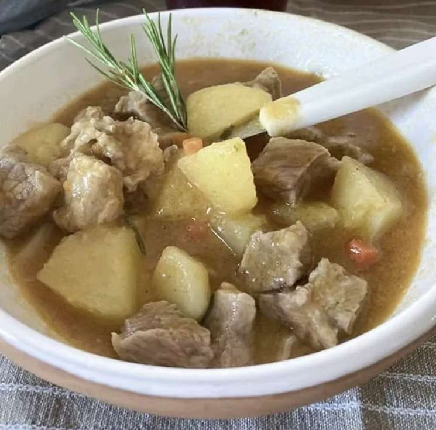

Italian Veal Stew (Spezzatino)

Veal Stew (Spezzatino) is a classic Italian stew, a winter rustic comfort food. Spezzatino recipe is a tasty complete meat recipe: tender veal cubes cooked slowly with the potatoes in stew. The result is a luscious rich creamy stew. Just the aroma, while it’s cooking, is enough to make your mouth water!
Ingredients
- 1.3 pounds of stewing Veal
- 1.1 pound of potatoes
- 1 small carrot
- 1/2 stick of celery
- 1 small onion
- 1/2 cup of dry white wine
- 3 cups of meat broth
- 2 sprigs of rosemary
- 6 tablespoons of olive oil.
- 2 tablespoons of all-purpose flour
- 3 tablespoons of Tomato Paste
- 1 teaspoon of fine salt
- freshly ground black pepper
Instructions
- With the help of a small food processor, chop the celery, carrot and onion into small pieces and set aside. Then with a sharp knife, cut the veal into 1 inch pieces.
- Flour the pieces of meat and shake them to remove excess flour. Keep them aside. In a large casserole, make a soffritto with the extra virgin olive oil and the chopped vegetables. Cook over low heat until softened and golden, about 2 minutes.
- Add the floured pieces of meat. Cook over high heat for 3 minutes, turning them from time to time until browned all over. Then add the dry white wine. Mix and let it evaporate completely over high heat.
- Finally add a couple of ladles of hot stock and a pinch of salt. Cover with a lid and reduce the heat. Let the veal stew cook for about 30 minutes over very low heat, taking care to stir it from time to time. While the veal is cooking, peel the potatoes and cut them into fairly regular pieces of about 1 1/2 inch. Now add the potatoes. Season with salt, freshly ground black pepper and the rosemary. Then add a ladle of hot stock.
- At this step, you want to give an extra touch of color and flavor, add three tablespoons of tomato paste. Stir and cook for another 90 minutes or longer. During the cooking, don’t stir very often or you risk flaking the potatoes. They must be soft, but still intact. Remove the sprig of rosemary before serving. Italian veal stew with potatoes is ready. Serve it hot!